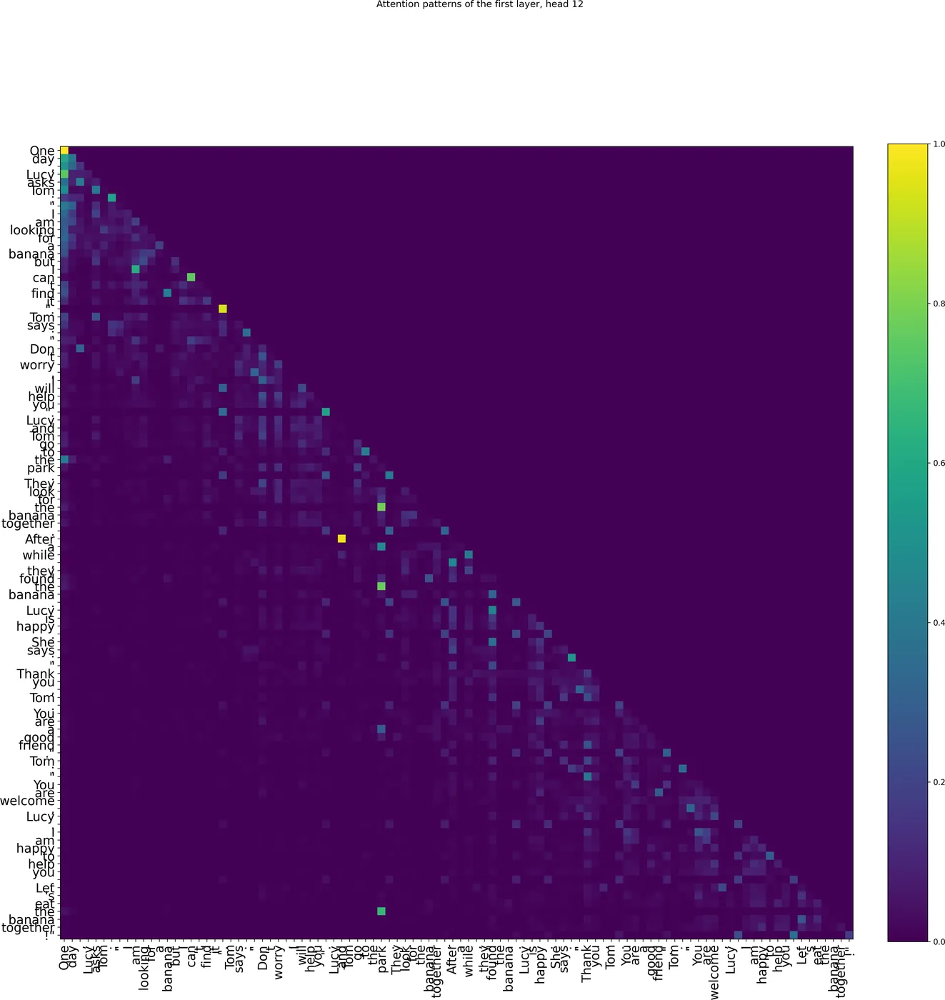
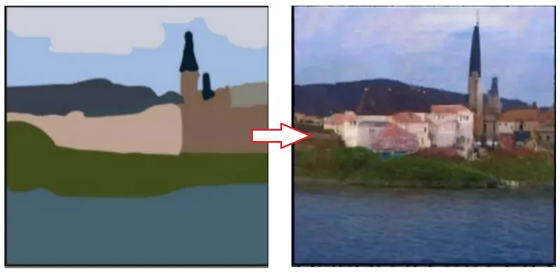
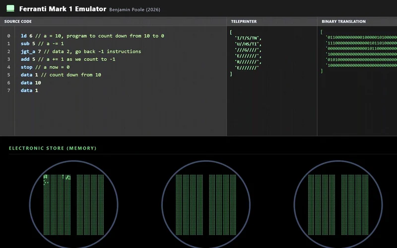
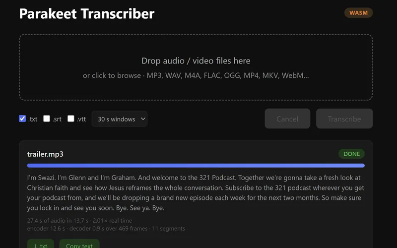
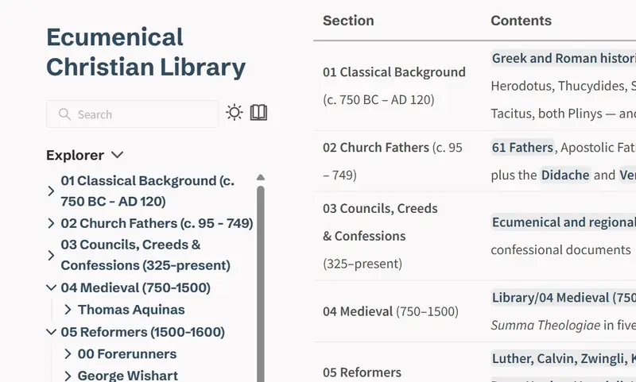
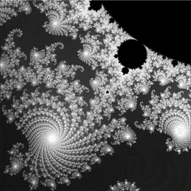
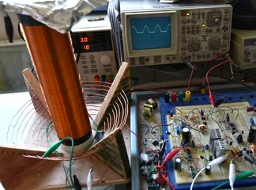

Projects
-

An LLM from scratch
An implementation and analysis of a 14.5M-parameter language model written from the matrix multiplications up.
-

Sketch to photograph with SDEdit
Stable Diffusion turned into a sketch renderer, with no retraining at all.
-

Ferranti Mark I Emulator
The 1951 machine emulated in the browser, with visualised Williams-tube store.
-

Browser-native speech transcriber
Parakeet TDT 0.6B, running entirely in the browser.
-

Ecumenical Christian Library
A searchable digital library of over 17,000 texts.
-

Fast Mandelbrot renderer
A GPU-accelerated set explorer built for speed.
-

Solid-state Tesla coil
A homebrew SSTC running off 30V, reaching 60kV.